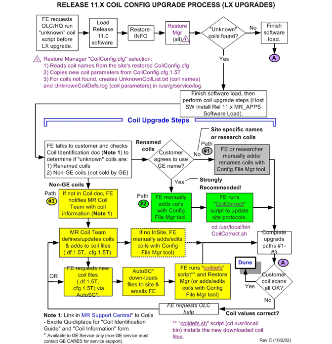
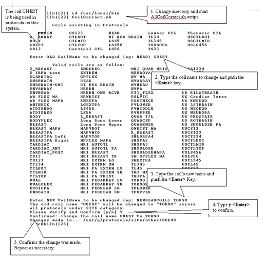

GE Exclusive Use Only
Direction 5440000, Rev# 5
Signa HDxt Service Methods
Module Version 1.0, Version Date 5/3/07
GE Exclusive Use Only |
This section should only be completed on systems upgrading from Signa 8.x or 9.x to 10.x or higher, and the system has reported unknown coils during restore manager update of CoilConfig.cfg. Beginning with Signa 10.0, the number of parameters used in coil configuration has grown significantly. It is no longer a simple matter to configure new surface coils to Signa. As a result, a new process has been developed which auto configures known coils. The configuration is based off a known coil definition file that is keyed on known coil names.
| NOTE: | You should do a Save Protocols before beginning the coils configuration process. This will allow for recovery in the event that something goes wrong in the coil update process. |
There are two main reasons why a coil may not be part of the coil definition file:
Coils sold by GE that the customer has renamed from the GE standard name.
Coils not sold by GE and or coils created by researchers.
Once coils have been flagged by the system as being unknown, the unknown coil(s) will have to be added to the system by one of three methods before it can be used.
GE coils not using standard GE names that the customer does not agree to rename. These coils must be manually added/renamed using the Config File Manager tool. Non-GE or research coils are manually added using Config File Manager tool. All parameters will have to be updated manually.
GE coils that have been renamed are renamed back to their standard GE name. These coils must be manually added using the Config File Manager tool. A script is provided to update customer protocols if this step is used.
An update to the coil definition file is requested from GEMS HQ Coil Team. Once created the new file is downloaded and the coils are configured to the system using a script provided with 11.x software.
The first step to resolve unknown coil problem is to obtain the GE Coil Identification Document. This document may be found on the Excite Coil Identification Guide off the main system index. The latest copy can always be obtained by GE Employees by going to MR OLC Support Central on the GEMS Intranet and down load the document from under Manuals -> Coil Identification Document. This document can be used to help determine if unknown coils are renamed coils or non-GE (Not sold by GE) coils. Once the unknown coils are identified, refer to Illustration 1 for the coil update process and determine what action should be taken.
Illustration 1: RELEASE 11.X COIL CONFIG UPGRADE PROCESS (LX UPGRADES)

Section 1 through Section 3 explain in detail the paths shown in Illustration 1.
This section covers path (1) on Illustration 1. To view all the coils that have been flagged as unknown, go to the Service Desktop and Open a Cshell. Then type at the command prompt:
> more /usr/g/service/log/UnknownCoilList.txt<Enter>
Coils are manually added to the Signa system using Configuration File Manager. To start the Configuration File Manager go to the Service Desktop. If not already started, start the Service Browser, Choose the [Configuration] Tab and push the [Configuration File Manager] link on the left.
This section covers path (2) on Illustration 1. This section also assumes that known GE coils have been renamed to non-GE standard names and the customer have agreed to use the standard GE names again. The coils that couldn’t be found on the original update will have to be added manually using the correct names. After the coils are added, existing customer protocols that use the non standard name can be updated via script to the new coil name. Continue as follows.
To view all the coils that have been flagged as unknown, go to the Service Desktop and Open a Cshell. Then type at the command prompt:
> more /usr/g/service/log/UnknownCoilList.txt<Enter>
Coils are manually added to the Signa system using Configuration File Manager. To start the Configuration File Manager go to the Service Desktop. If not already started, start the Service Browser, choose the [Configuration] Tab and push the [Config File Manager] link on the left.
Add the additional coils as needed. From the “Available Coils” list, select the added coil(s) from the “Site Coils” list (added to bottom of list), then click [Edit Coil]. Change coil name back to the GE coil name.
As an example, if the customer had a coil named “CHEST” that was using the GE TORSO coil, in Config File Manager add the CHEST coil back to the site list and then edit the coil and change the name to TORSO.
| NOTE: | Once finished it may take a few minutes for the Coil Config to update to complete (refer to status line at the bottom of Config File Manager window). |
Once a coil name has been changed, update the customer existing protocols by doing the following.
Open a Cshell and type the following at the command prompt:
> cd /usr/local/bin<Enter>
> CoilCorrect.sh<Enter> (If only one coil needs updating) or use
> AllCoilCorrect.sh<Enter> (This will allow walk through multible coils)
In the command window will appear a list of the coils that are currently used in the customer protocols. Enter the coil name you want to change. The next question will be what should the name be changed to. Give it the new name used in step 3 above, then a final verification is made and the scrip changes the coil names in the protocol.
Using the example given above, changing the customer coil name “CHEST” back to the GE name “TORSO”. Illustration 2 shows the screens as seen on Signa. Illustration 2 is an example screen. The number of coils shown for your system may vary.
Repeat step 4 for all coils that may have renamed.
Illustration 2: UPDATING CUSTOMER PROTOCOLS WITH NEW COIL NAMES

CoilConfig.cfg.1.5T.txt (viewable version of coil template file; not a Unix file)
You can access the “Coils - Excite” Quickplace by going to MR Support Central: The latest copy is available from as follows: Manuals → Signa Documentation → Coils - 10.X and above. Signa Infinity & Excite Technology → Q.P. 11.x Coil Listing.
| NOTE: | Be sure to not use anything except for the 11.x listing. |
Scroll to the bottom of the Quickplace screen and select the [CoilConfig.cfg.1.5T.txt] document.
Copy the file to your PC, or open the file and view/record the values for the coil(s) you need. (This is a viewable only file. It is not a Unix file and cannot be transferred to Signa.)
This method is used to change only those coils that need updating.
From the service desktop Utilities menu, select the [Configuration File Manager] tool.
Click [Coil Config File]. From the “Site Coils” list, select the coil names that need to be updated then click [>>REMOVE>>]. (Example: If NVHEAD and NVARRAY coils need be updated due to coil faults, select NVHEAD and NVARRAY then click [>>REMOVE>>].
From the “Available Coils” list, select the same coil names as the last step (example: NVHEAD, NVARRAY), and then click [>>ADD>>]
When all coils to be updated have been removed and re-added, exit and save changes by clicking [Quit], [Yes], and then [Save] to save changes.
Reboot Signa for coil changes to take effect.
Perform a test scan with the changed coil(s).
The section explains how to manually added “unknown” coils found by Restore Manager back into the site’s Coil Config file so they are available for customers to use.
Type the following in the command window:
> cd /usr/g/service/log<Enter>
> more UnknownCoilList.txt<Enter> (Displays a list of “unknown” coils.)
> more UnknownCoilDefs.log<Enter> (Displays the original coil parameters for each “unknown” coil.)
From the service desktop Utilities menu, select the Configuration File Manager tool.
Click [Coil Config File], then click [Add new Coil].
The Add a New Coil screen displays coil value fields for a new coil. Either click in the fields or tab through the fields to enter values from the “UnknownCoilDefs.log”. (Use the <Delete> key to edit text; the <Backspace> key works from the end of the field instead of where the cursor is located). Click [OK] to close the screen.
Repeat step 4 for additional “unknown” coils. When all “unknown” coils have been added, exit and save changes by clicking [Quit], [Yes], and then [Save] to save changes.
Reboot Signa for coil changes to take effect.
This method is for sites with an InSite connection. The AutoSC request will download the following files to the /usr/local/bin directory for the site you requested:
CoilConfig.cfg.1.5T (coil template file used by Restore Manager)
CoilConfig.df.1.5T (coil template file used by Config File Manager tool)
coildefs.sh (install script for template files)
Type the following to determine the version (date) AutoSC coil template files at the site (example shown):
{sdc@t15}[1] cd /w/config [Enter]
{sdc@t15}[2] ls -l *autosc* [Enter]
-rw-r--r-- 1 sdc informix 133181 Sep 30 15:33 CoilConfig.cfg.1.5T.autosc
-rw-r--r-- 1 sdc informix 133268 Sep 30 15:33 CoilConfig.df.1.5T.autosc
This process downloads new coil template files to the site, but does not change any site coil values (that’s done in a later section).
Send an email request to the Auto Support Center (ASC) with the following information:
Address the email to AutoSC (med)
In the email “Subject:” heading, type: sweep
In the message body, enter the following lines:
type = coildefsll
system id =[your systemid]
return mail =email_address (optional – Only if you want the return mail sent to a different address than sending).
Send the email. (Typical AutoSC response time is ~0.2-3 hours.)
Download not successful: If you receive an email that the download to the site not was successful, either troubleshoot the connectivity problem and try the request again, or proceed to Section 3.1, Quickplace Coil Update (Manual Method). Download successful: You will receive an email that the download to the site was successful (see example). Continue with the next step.
At the site, on the service desktop, click [C-Shell].
Type the following in the command window (do not login as “root”):
> cd /usr/local/bin<Enter >
> coildefs.sh<Enter> (This script backs up the original CoilConfig.cfg.1.5T and .df.1.5T files, then installs the new ones in the /w/config directory. The existing site CoilConfig.cfg file (contains sites coil names and values) is not modified with this script!). When the script completes, the following is displayed:
This method first makes a backup copy of the site’s CoilConfig.cfg file. It then reads each coil name from the CoilConfig.cfg (site’s coil list) file and copies the coil parameters from the new downloaded CoilConfig.cfg.1.5T template file for each coil. If any coil name is not found in the template file, it is displayed in a popup message as an “unknown” coil.
Type the following in the command window (do not login as “root”):
runrestore<Enter>
Select "[CoilConfig.cfg]" and then click [Update]. This copies the latest parameters for all site coils from the new CoilConfig.cfg.1.5T file to the CoilConfig.cfg (site’s coil file)
| NOTE: | If any “unknown” coils are found, complete step 4 and then perform the steps inSection 3.3 - Adding “Unknown” Coils Back In the Site’s Coil Config File. |
Click [Quit] when the update is finished.
Reboot Signa for coil changes to take effect.
Reboot Signa for coil changes to take effect.